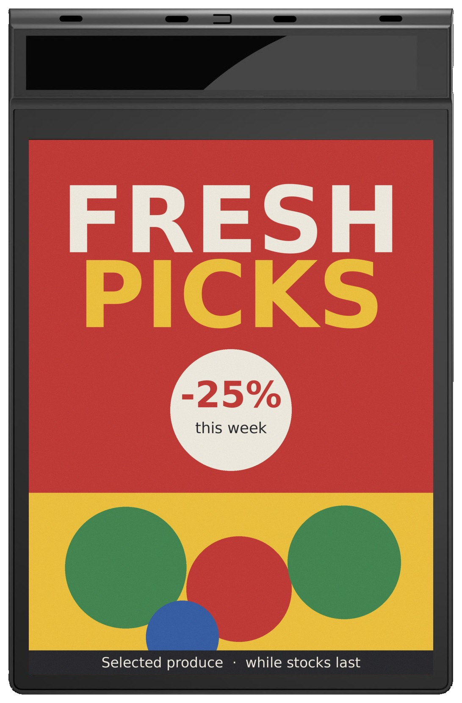
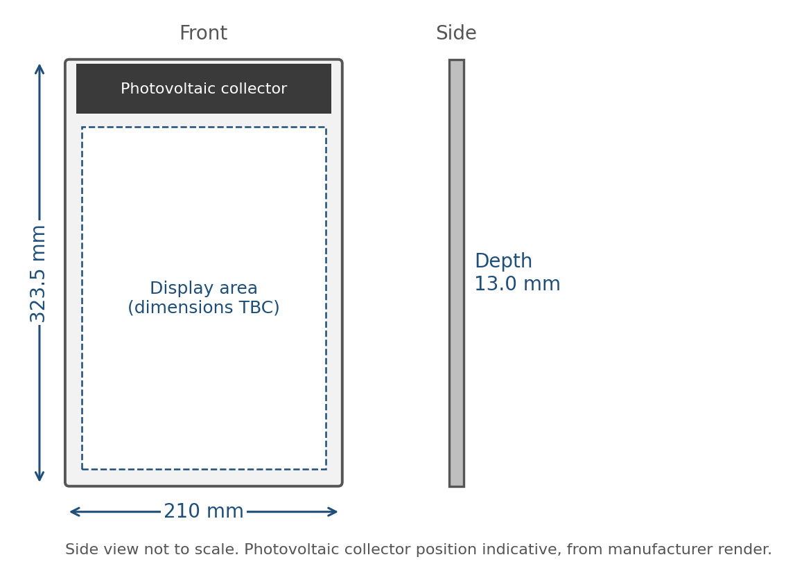
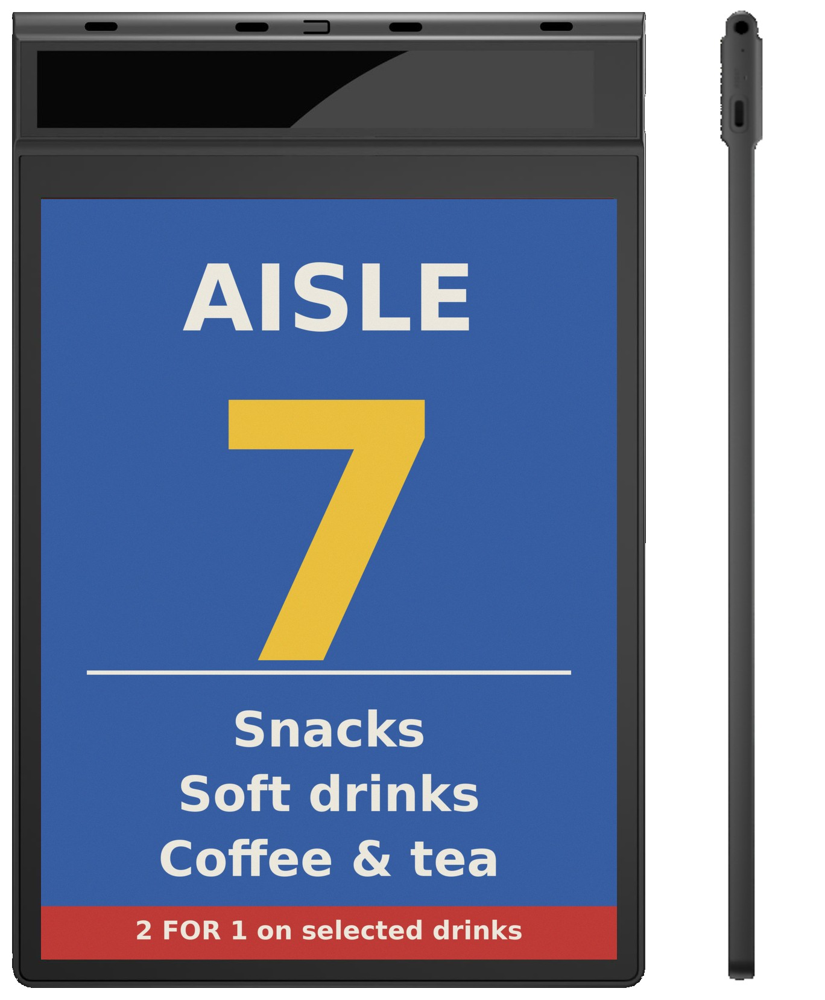
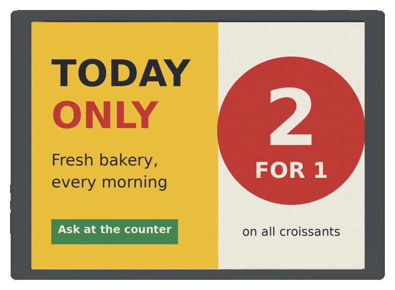
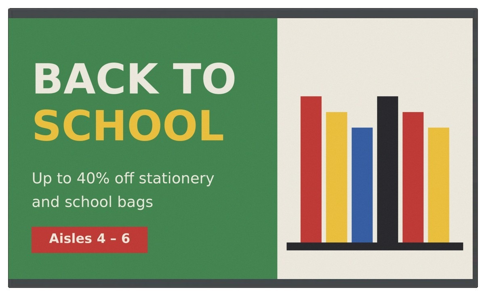
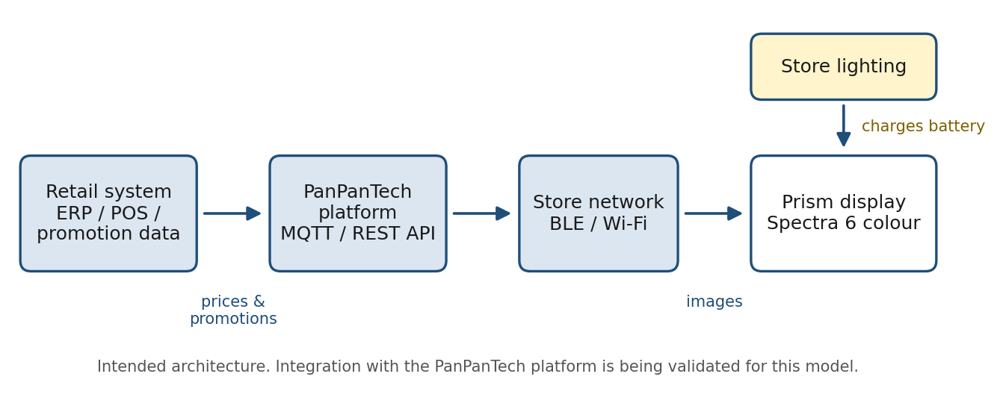

Which Prism fits where?
| Model | Size & format | Power | Run time | Best for |
|---|---|---|---|---|
| AES-1243P | 12.43″ portrait, single-sided 1,208 × 1,600 | 300 mAh + photovoltaic | Kept charged by store light in BLE mode at 1 update/day* | End-caps, aisle promotions |
| AES-1243P-D | 12.43″ portrait, double-sided 1,208 × 1,600 each face | Battery + photovoltaic | 2 updates/day continuous* | Ceiling-hung aisle signs read from both directions |
| AES-1330P | 13.3″ landscape 4:3 1,600 × 1,200 | 5,000 mAh, USB-C PD | ≈3 months Wi-Fi on / ≈6 months off, 5 updates/day* | Counters, checkouts, entrances |
| AES-3150P | 31.5″ landscape 16:9 2,560 × 1,440 | 7,100 mAh 11.4 V, USB-C PD | ≈4 months Wi-Fi on / ≈8 months off, 5 updates/day* | Entrances, malls, promotional walls |
* Manufacturer figures, measured with good Bluetooth / Wi-Fi signal. Photovoltaic yield depends on the light level at the installation point; the minimum light level is still to be confirmed.
AES-1243P — 12.43″ light-powered promo sign

The headline model: a full-colour promotion sign that tops up its own battery from store lighting. A perovskite photovoltaic collector runs across the top of the housing. In Bluetooth mode at one image update per day, the manufacturer rates the collector as keeping the battery charged — which is what makes a fleet of end-cap signs practical, because nobody has to walk the store with chargers.
Two radios cover the two jobs: Bluetooth for the low-power daily update, Wi-Fi 2.4 / 5 GHz when speed matters more than battery. On Wi-Fi with a permanent connection, run time drops to about ten days per charge, so the photovoltaic case applies to the Bluetooth mode specifically.
| Display | 12.43″ E Ink Spectra 6, portrait · 1,208 × 1,600 · ≈161 ppi |
| Radios | Bluetooth LE (GR5332 SoC, RTOS) · Wi-Fi 2.4 / 5 GHz · button set-up |
| Power | 300 mAh 3.7 V Li + perovskite photovoltaic collector · USB-C 5 V |
| Run time | BLE, 1 update/day: theoretically unlimited under adequate light and good signal (manufacturer rating) · Wi-Fi always-on: ≈10 days |
| Mechanical | 323.5 × 210 × 13.0 mm · 540 g · PC + ABS · desktop or wall |
| Environment | 0–50 °C operating, indoor · charge at 0–40 °C |

AES-1243P-D — 12.43″ double-sided aisle sign

The double-sided version, for the most classic retail sign there is: the one hanging over the aisle. Two 12.43″ panels sit back to back, so shoppers coming from either direction see the sign. It adds current radios (Bluetooth 5.4 and Wi-Fi 6) and a slimmer 8 mm body.
This model is at an earlier stage than the others. The manufacturer figure is two updates a day with continuous operation from photovoltaic charging; battery capacity, operating temperature, housing material, hanging hardware and whether each face can show different content are all still to be confirmed.
| Display | 2 × 12.43″ six-colour e-paper, portrait · 1,208 × 1,600 each |
| Radios | Bluetooth 5.4 · Wi-Fi 6 (2.4 + 5 GHz) |
| Power | Rechargeable battery + photovoltaic collector · USB-C · capacity to be confirmed |
| Mechanical | 323.5 × 210 mm · 8.0 mm body, 13.0 mm top section · ≈540 g · ceiling-hung |
| Still to be confirmed | Independent content per face · operating temperature · housing · hanging hardware |
AES-1330P — 13.3″ counter and checkout poster

A compact poster for a counter or beside the checkout. At 150 ppi it handles text-dense offers and small print better than the 31.5″ model. A 5,000 mAh battery lasts around three months with Wi-Fi connected, or six with Wi-Fi off, at five updates a day (manufacturer figures), and USB-C PD tops it up quickly when it is due.
| Display | 13.3″ E Ink Spectra 6, 4:3 · 1,600 × 1,200 · 150 ppi · active area 270.4 × 202.8 mm · >178° viewing |
| Controller | Arm Cortex-M33 MCU, RTOS · Wi-Fi 4, 2.4 GHz · NFC or button set-up |
| Power | 5,000 mAh 3.7 V Li · USB-C PD 3.0 |
| Mechanical | 301.3 × 218.2 × 9.1 mm · 520 g · PC + ABS · desktop or wall |
| Environment | 0–50 °C operating, indoor |
AES-3150P — 31.5″ wide entrance display

The wide-format model for entrances, malls and promotional walls. The 16:9 landscape panel means existing landscape campaign artwork carries over directly. A 7,100 mAh battery gives around four months with Wi-Fi connected or eight with it off, at five updates a day (manufacturer figures).
An optional photovoltaic strip along the lower edge is under evaluation. We want to be precise about what it can do: it is expected to lengthen the interval between charges, not remove the need to charge. The 31.5″ panel is roughly six times the area of the 12.43″, runs on Wi-Fi rather than Bluetooth, and carries a battery of around 81 Wh — a strip of indoor photovoltaic cells cannot keep up with that. Figures will be published once tested.
| Display | 31.5″ E Ink Spectra 6, 16:9 · 2,560 × 1,440 · ≈93 ppi · active area 696.32 × 391.68 mm |
| Controller | Arm Cortex-M33 MCU, RTOS · Wi-Fi 4, 2.4 GHz · NFC or button set-up |
| Power | 7,100 mAh 11.4 V Li · USB-C PD 3.0 · photovoltaic strip under evaluation |
| Mechanical | 707.5 × 421.5 × 15.1 mm (6.2 mm thinnest) · 3 kg · ABS · stand or wall |
| Environment | 0–50 °C operating, indoor |
How content reaches the display

The intended workflow is to manage promotions from your retail system. The goal is to send the right image from your ERP, POS or promotion system to each display alongside updates for your shelf labels. This shared workflow depends on the platform integration now being validated.
The honest status: the manufacturer provides the device communication protocol, and our connection to it over MQTT and REST API is being validated now. Until that is complete, a manufacturer app (Android and iOS) and web console cover set-up, evaluation and stand-alone use. If you are planning a deployment, ask us for the current integration status first. For how the retail-system side of that link works, see connecting ESL to POS, ERP and databases.
What Prism is not
It is not a digital signage screen, and buying it as one leads to disappointment. Colour e-paper redraws by physically moving pigment particles. A full refresh on a six-colour panel takes in the order of 10 to 30 seconds and visibly flashes while it happens. It cannot show video or animation, and it is not designed to rotate content every few seconds.
What it does well is the opposite: a sharp, glare-free image that reads like print, holds with zero power for as long as you like, and changes a few times a day without a cable. Think of it as a poster that replaces itself. We explain why refresh time also shapes how many displays one network can update in how many labels one gateway can support.
Prism or a large shelf label?
| Large shelf label (e.g. 10.2″–13.3″) | Prism promo display | |
|---|---|---|
| Job | Price, often with a short promo line | Promotion image and message |
| Colours | Up to 3–4 (B/W/R/Y) | 6 (adds blue and green) |
| Power | Coin cells, years | Rechargeable, months — or light-powered on 12.43″ |
| Network | AiESL base station | Bluetooth / Wi-Fi |
| Certification | CE / FCC | Not yet certified |
If the display mainly carries a price, a large label from one of the six label families runs for years on coin cells. If it carries a campaign image, Prism is the better fit. A shared promotion-data workflow is planned and remains subject to integration validation.
Samples, spec sheets and pricing
Full specification sheets for all four models are available in English and Chinese. Samples are available on request; lead time, minimum order and OEM options (housing colour, logo, packaging) are confirmed per project, and pricing is quoted separately. Request samples and spec sheets and tell us which model and how many stores you are planning for.
Notes on the data
- E Ink Spectra 6 — E Ink Corporation. The six-colour e-paper platform used in Prism panels.
- All run-time, photovoltaic and electrical figures on this page are manufacturer figures from preliminary data and are confirmed against the agreed specification at the time of order. Model numbers are provisional.
- On-screen artwork in all product images is sample content created for illustration.